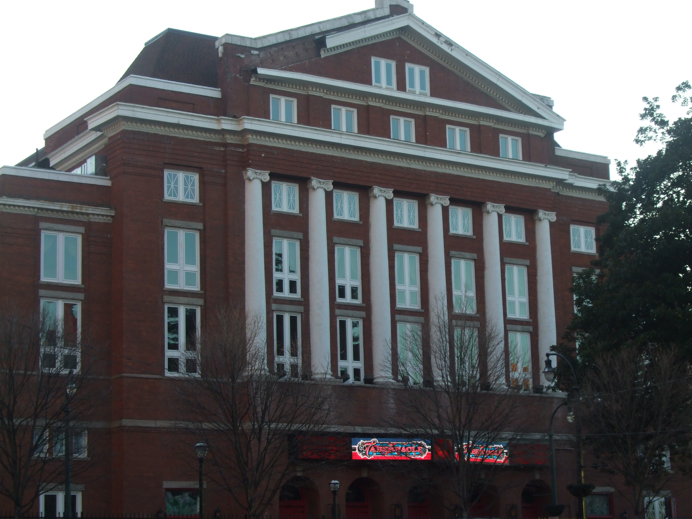

HOME | VENUES | TIPS | GALLERY | COMMENTARY
| Venue Name | Location | Capacity |
|---|---|---|
| Aisle 5 | Little 5 Points | 200 |
| The Loft | Midtown | 650 |
| Center Stage | Midtown | 1,050 |
| The Tabernacle | Downtown | 2,600 |
| Verizon Wireless Amphitheater | Alpharetta | 12,000 |
| Aarons Amphitheater | Lakewood | 18,920 |
| Philips Arena | Downtown | 21,000 |
| Mercedes Benz Stadium | Downtown | 75,000 |
Some of my tips and tricks that I have picked up involve ways to go to concerts for cheap or even free, do’s and don’ts at certain venues, and how to go to as many as four concerts a month.
Lets start with ways to go to a concert for cheap. There are many ways to go to a concert for as little money as possible, one way is to use the website Groupon. I have used Groupon to get discounted tickets a couple of times, last month I purchased tickets to see Halsey for only $40 where the original tickets would have cost $70+. Another way to get cheap tickets are to buy them the day they go on sale. Buying your tickets the day they go on sale will guarantee that you will buy them for face value, because as time goes on the prices will get higher and higher. Also if you buy your tickets from the venue’s box office instead of online, you get out of paying extra for fees. Now going to concerts for free is a little tricky and it takes a lot of luck, but if you listen to your local radio stations, chances are they are giving out free concert tickets to a lucky caller or even their social media platforms can have giveaways to win tickets. It seems like a long shot but if you’re lucky it can happen.
With all of those tips on going to concerts for cheap and a few other tips this is how I, a broke college student on a budget, can go to so many concerts. If you are up for expanding your taste in music to artists that are not on the radio, then their concerts always cost less at smaller more intimate venues. Most of the time the prices for an underground artist’s ticket can range from $10-$50. Some of my favorite small venues are listed below such as Center Stage and The Loft. These smaller shows are very intimate with the artist and you can feel more connected to them, which in turn can make the concert more enjoyable. Also, a little bonus tip, many of the artists that perform at small venues will come out after the show and you will get the chance to meet them, talk to them, and get a picture taken with them.
